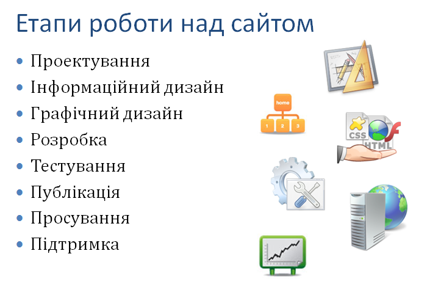
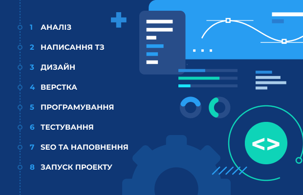

Сайти можуть виконувати різні функції залежно від їх призначення. Деякі з найпоширеніших видів сайтів включають інтернет-магазини, комерційні сайти, сайти-візитівки та лендінги.
Існують різні методи створення веб-сайтів, включаючи використання HTML та CSS для створення статичних сторінок, використання фреймворків та бібліотек для розробки динамічних веб-додатків, а також використання систем управління контентом (CMS) для спрощення процесу редагування та публікації контенту.
Процес створення веб-сайту включає кілька етапів, від збору вимог і створення концепції до дизайну, розробки, тестування та впровадження.
Створення веб-сайтів зазвичай вимагає командної роботи різних фахівців, таких як веб-дизайнери, веб-розробники, контент-менеджери, SEO-спеціалісти та інші.
Найкращі веб-сайти відрізняються відмінним дизайном, зручним інтерфейсом користувача та ефективним виконанням їх функцій, таких як продажі, презентація продуктів чи послуг, розповсюдження інформації тощо.